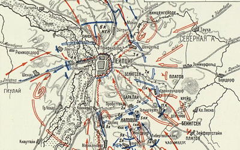
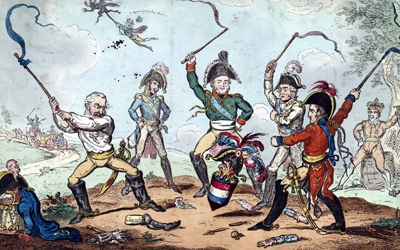
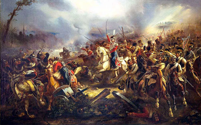

Битва под Лейпцигом (16—19 октября 1813 года)
Сентябрь 1813 года прошёл без значительных сражений, за исключением очередного неудачного похода французской армии под началом маршала Нея на Берлин. Одновременно шло ухудшения положения французской армии: ряд незначительных поражений, изнурительные марши и плохое снабжение приводили к значительным потерям. По мнению немецкого историка Ф. Меринга, за август и сентябрь французский император потерял 180 тыс. солдат, главным образом от болезней и дезертирства.
16 октября.
Около 8 часов утра русско-прусские силы генерала Барклая де Толли открыли артиллерийский огонь по противнику. Затем авангардные части пошли в атаку. Русские и прусские силы под командованием фельдмаршала Клейста около 9.30 заняли деревню Марклейберг, которую обороняли маршалы Ожеро и Понятовский. Противник четырежды выбил русско-прусские войска из деревни и четырежды союзники вновь брали деревню штурмом.
Располагавшаяся восточнее деревня Вахау, где стояли части под командованием самого французского императора Наполеона, также была взята русско-прусскими под общим командованием герцога Евгения Вюртембергского. Правда, из-за потерь от обстрела вражеской артиллерии, к полудню деревню оставили.
Русско-прусские силы под общим командованием генерала Андрея Горчакова и 4-й австрийский корпус Кленау атаковали деревню Либертвольквитц, которую обороняли пехотные корпуса Лористона и Макдональда. После яростного боя за каждую улицу деревня была захвачена, однако обе стороны понесли значительные потери. После подхода к французам резервов, в союзники к 11 часам были вынуждены оставить селение. В результате наступление союзников не принесло успеха, и весь фронт антифранцузских сил был так ослаблен сражением, что был вынужден защищать исходные позиции. Наступление австрийских войск против Конневитца также не принесло успеха, и после полудня Карл Шварценберг направил австрийский корпус на помощь Барклаю де Толли.
Первый день не выявил победителей. Однако бой был очень яростным и потери с обеих сторон были значительными. В ночь с 16 на 17 октября к Лейпцигу подошли свежие армии Бернадота и Беннигсена. Силы союзников имели почти двойное численное преимущество над силами французского императора.
17 октября.
17 октября значительных сражений не было, обе стороны собирали раненых и хоронили убитых. Только на северном направлении армия фельдмаршала Блюхера, взяла деревни Ойтрицш и Голис, вплотную подойдя к городу. Наполеон стянул войска поближе к Лейпцигу, но не стал уходить. Он надеялся заключить перемирие, так же он рассчитывал на дипломатическую поддержку «родственника» - австрийского императора. Через попавшего в плен при Конневитце австрийского генерала Мерфельда поздно ночью 16 октября Наполеон передал врагам свои условия перемирия. Однако те даже не ответили.
18 октября.
7 часов утра главнокомандующий Карл Шварценберг отдал приказ о переходе в наступление. Французские войска дрались отчаянно, селения по нескольку раз переходили из рук в руки, дрались за каждую улицу, каждый дом, каждую пядь земли. Так, на левом фланге французов русские солдаты под началом Ланжерона с третьей атаки, после страшной рукопашной схватки, захватили деревню Шелфельд. Однако посланные маршалом Мармоном подкрепления выбили русских с занятой позиции. Особенно яростный бой кипел у деревни Пробстейд (Пробстхайд), в центре французских позиций. Корпуса генерала Клейста и генерала Горчакова к 15 часам смогли пробиться в селение и начали захватывать один дом за другим. Тогда в битву была брошена Старая Гвардия и гвардейскую артиллерию генерала Друо (около 150 пушек). Французские войска выбили союзников из деревни, и пошли на главные силы австрийцев. Под ударами наполеоновской гвардии союзные линии «затрещали». Наступление французов было остановлено огнём артиллерии. К тому же Наполеона предала саксонская дивизия, а затем вюртембергские и баденские части.
Жестокий бой продолжался до ночи, французские войска удержали все основные ключевые позиции, но на севере и востоке союзники вплотную подошли к городу. Французская артиллерия израсходовала практически весь боезапас. Наполеон дал приказ об отступлении. Войска под командованием Макдональда, Нея и Лористона оставались в городе для прикрытия отступления. В распоряжении отступающей французской армии оказалась только одна дорога на Вайсенфельс.
19 октября.
Союзники планировали продолжить бой, чтобы вынудить французов к капитуляции. Разумные предложения русского государя о форсировании реки Пляйсе и прусского фельдмаршала Блюхера о выделении 20 тыс. кавалерии для преследования противника были отклонены. На рассвете, поняв, что враг очистил поле сражения, союзники двинулись на Лейпциг. Город обороняли солдаты Понятовского и Макдональда. В стенах были пробиты бойницы, на улицах, среди деревьев, садов были рассыпаны стрелки и расставлены орудия. Солдаты Наполеона дрались отчаянно, бой был кровавым. Лишь к середине дня союзникам удалось овладеть предместьями, выбив оттуда французов штыковыми атаками. Во время сопутствующей спешному отступлению неразберихи, сапёры взорвали мост Эльстербрюкке, находившийся перед Рандштадскими воротами. В это время в городе ещё оставалось около 20-30 тыс. солдат Макдональда, Понятовского и генерала Лористона. Началась паника, маршал Юзеф Понятовский, попытался организовать контратаку и организованное отступление, был дважды ранен и утонул в реке. Генерал Лористон попал в плен, Макдональд едва избежал смерти, вплавь перебравшись через реку, тысячи французов попали в плен.